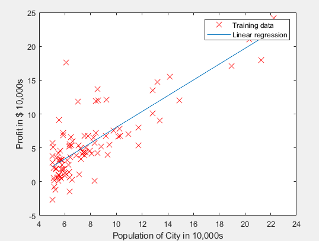

吴恩达机器学习—单变量线性回归作业(matlab)
Aug 16, 2019 14:43 · 99 words · 1 minute read
吴恩达机器学习——单变量线性回归作业（matlab）
1.Simple Octave/MATLAB function
warmUpExercise.m：生成一个5 * 5 的单位矩阵
实现代码：
A = eye(5)
笔记:matlab中eye(n)函数生成一个n*n的单位矩阵
结果：
2.Plotting the Data
plotData.m：绘制数据，将数据集绘制在二维空间
实现代码:
plot(x,y,'rx','MarkerSize',10); %Plot the data
ylabel('Profit in $10,000s'); %set the y-axis label
xlabel('Pupulation of City in 10,000s'); %set the x-axis label
笔记：plot(x,y,‘rx’,‘MarkerSize’,10)参数含义:x、y为点的坐标，rx表示用红色的X形状来表示点，MarkerSize、10表示X形状的大小
结果：
3.Computing the cost J(theta)
computeCost.m：计算代价函数值
假设函数： $$ h{\theta}(x)=\theta^{\tau}x=\theta{0}+\theta{1}x $$ 代价函数： $$ J(\theta)=\tfrac{1}{2m}\sum{i=1}^{m}(h_{\theta}(x^{i})-y^{i})^{2} $$ 实现代码：
J = sum(((X * theta) - y) .^ 2)/(2*m);
笔记：.^ 代表矩阵中每个元素做平方操作
结果：
4.Gradient descent
gradientDescent.m：梯度下降算法，更新theta并计算代价函数值
theta更新算法： $$ \theta{j} := \theta{j}-\alpha \tfrac{1}{m}\sum{i=1}^{m}(h{\theta}(x^{i})-y^{i})x_{j}^{i} $$ 实现代码：
theta = theta - alpha/m * X' * （X * theta - y）
笔记：X’ 为X矩阵的转置矩阵
结果：得到最终的theta值
根据选定的变量值绘制出目标函数
